Lecciones de circuitos eléctricos - Volumen II
Capítulo 14
LÍNEAS DE TRANSMISIÓN
- A 50-ohm cable?
- Circuits and the speed of light
- Characteristic impedance
- Finite-length transmission lines
- “Long” and “short” transmission lines
- Standing waves and resonance
- Impedance transformation
- Waveguides
A 50-ohm cable?
Al principio de mis exploraciones sobre la electricidad, me encontré con una serie decable coaxialcon la etiqueta “50 ohmios” impresa a lo largo de su funda exterior. (Cifra below) Ahora bien, el cable coaxial es un cable de dos conductores hecho de un solo conductor rodeado por una cubierta de alambre trenzado, con un material aislante de plástico que los separa. Como tal, el conductor exterior (trenzado) rodea completamente el conductor interior (un solo cable), los dos conductores están aislados entre sí en toda la longitud del cable. Este tipo de cableado se utiliza a menudo para conducir señales de voltaje débiles (de baja amplitud), debido a su excelente capacidad para proteger dichas señales de interferencias externas.
{kind=link}
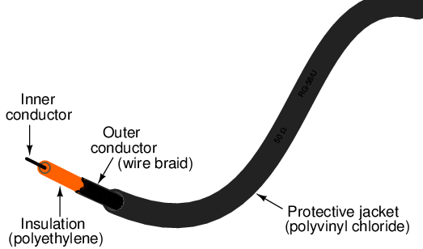
Construcción de cable coaxial.
Me desconcertó la etiqueta de “50 ohmios” de este cable coaxial. ¿Cómo es posible que dos conductores, aislados entre sí por una capa de plástico relativamente gruesa, tengan 50 ohmios de resistencia entre ellos? Al medir la resistencia entre los conductores exterior e interior con mi óhmetro, encontré que era infinita (circuito abierto), tal como hubiera esperado de dos conductores aislados. Medir la resistencia de cada uno de los dos conductores desde un extremo del cable al otro indicó casi cero ohmios de resistencia: nuevamente, exactamente lo que hubiera esperado de longitudes de cable continuas e ininterrumpidas. En ninguna parte pude medir 50 Ω de resistencia en este cable, independientemente de en qué puntos conecté mi óhmetro.
Lo que no entendí en ese momento fue la respuesta del cable a “pulsos” de voltaje de corta duración y señales de CA de alta frecuencia. La corriente continua continua (CC), como la que utiliza mi óhmetro para comprobar la resistencia del cable, muestra que los dos conductores están completamente aislados entre sí, con una resistencia casi infinita entre los dos. Sin embargo, debido a los efectos de la capacitancia y la inductancia distribuidas a lo largo del cable, la respuesta del cable a voltajes que cambian rápidamente es tal que actúa como unfinitoImpedancia, dibujando corriente proporcional a un voltaje aplicado. Lo que normalmente descartaríamos como solo un par de cables se convierte en un elemento de circuito importante en presencia de señales de CA transitorias y de alta frecuencia, con propiedades características propias. Al expresar tales propiedades, nos referimos al par de cables comolínea de transmisión.
Este capítulo explora el comportamiento de las líneas de transmisión. Muchos efectos de las líneas de transmisión no aparecen en medida significativa en circuitos de CA de frecuencia de línea eléctrica (50 o 60 Hz), o en circuitos de CC continuos, por lo que hasta ahora no hemos tenido que preocuparnos de ellos en nuestro estudio de los circuitos eléctricos. Sin embargo, en circuitos que involucran altas frecuencias y/o longitudes de cable extremadamente largas, los efectos son muy significativos. Las aplicaciones prácticas de los efectos de las líneas de transmisión abundan en los circuitos de comunicación de radiofrecuencia (“RF”), incluidas las redes informáticas, y en los circuitos de baja frecuencia sujetos a transitorios de voltaje (“sobretensiones”) como los rayos en las líneas eléctricas.
Circuits and the speed of light
Supongamos que tuviéramos un circuito simple de una batería y una lámpara controlado por un interruptor. Cuando se cierra el interruptor, la lámpara se enciende inmediatamente. Cuando se abre el interruptor, la lámpara se oscurece inmediatamente: (Figura below)
{kind=link}
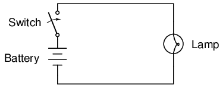
La lámpara parece responder inmediatamente al interruptor.
En realidad, una lámpara incandescente tarda poco tiempo en calentarse su filamento y emitir luz tras recibir una corriente eléctrica de magnitud suficiente para alimentarla, por lo que el efecto no es instantáneo. Sin embargo, me gustaría centrarme en la inmediatez de la corriente eléctrica en sí, no en el tiempo de respuesta del filamento de la lámpara. A todos los efectos prácticos, el efecto de la acción del interruptor es instantáneo en la ubicación de la lámpara. Aunque los electrones se mueven a través de cables muy lentamente, el efecto general de los electrones que se empujan entre sí ocurre a la velocidad de la luz (aproximadamente 186.000 millas por hora).segundo!).
Sin embargo, ¿qué pasaría si los cables que transportan energía a la lámpara tuvieran 300 000 kilómetros de largo? Como sabemos que los efectos de la electricidad tienen una velocidad finita (aunque muy rápida), un conjunto de cables muy largos debería introducir un retraso en el circuito, retrasando la acción del interruptor sobre la lámpara: (Figura below)
{kind=link}
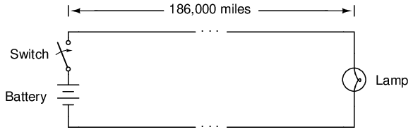
A la velocidad de la luz, la lámpara responde después de 1 segundo.
Suponiendo que no haya tiempo de calentamiento para el filamento de la lámpara y que no haya resistencia a lo largo de las 372,000 millas de longitud de ambos cables, la lámpara se encendería aproximadamente un segundo después de cerrar el interruptor. Aunque la construcción y funcionamiento de cables superconductores de 600.000 kilómetros de longitud plantearía enormes problemas prácticos, es teóricamente posible, por lo que este “experimento mental” es válido. Cuando el interruptor se abre nuevamente, la lámpara continuará recibiendo energía durante un segundo después de que se abra el interruptor y luego se desactivará.
Una forma de imaginar esto es imaginar los electrones dentro de un conductor como vagones de un tren: unidos entre sí con una pequeña cantidad de “holgura” o “juego” en los acoplamientos. Cuando un vagón (electrón) comienza a moverse, empuja al que está delante y tira del que está detrás, pero no antes de que se libere la holgura de los acoplamientos. Por lo tanto, el movimiento se transfiere de un vagón a otro (de un electrón a otro) a una velocidad máxima limitada por la holgura del acoplamiento, lo que da como resultado una transferencia de movimiento mucho más rápida desde el extremo izquierdo del tren (circuito) al extremo derecho que la velocidad real de los vagones (electrones): (Figura below)
{kind=link}
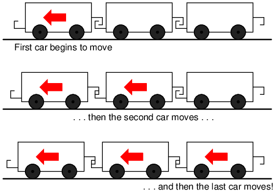
El movimiento se transmite sucesivamente de un coche al siguiente.
Otra analogía, quizás más apropiada para el tema de las líneas de transmisión, es la de las ondas en el agua. Supongamos que un objeto plano con forma de pared se mueve repentinamente horizontalmente a lo largo de la superficie del agua, de modo que se produzca una ola delante de él. La onda viajará cuando las moléculas de agua choquen entre sí, transfiriendo el movimiento ondulatorio a lo largo de la superficie del agua mucho más rápido de lo que realmente viajan las moléculas de agua: (Figura below)
{kind=link}
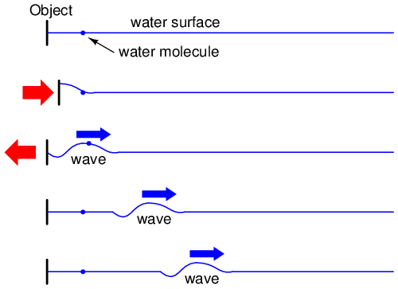
Movimiento ondulatorio en el agua.
Del mismo modo, el “acoplamiento” del movimiento de los electrones viaja aproximadamente a la velocidad de la luz, aunque los electrones en sí no se mueven tan rápidamente. En un circuito muy largo, esta velocidad de "acoplamiento" sería perceptible para un observador humano en forma de un breve retraso entre la acción del interruptor y la acción de la lámpara.
- REVISAR:
- En un circuito eléctrico, los efectos del movimiento de los electrones viajan aproximadamente a la velocidad de la luz, aunque los electrones dentro de los conductores no viajan ni cerca de esa velocidad.
Characteristic impedance
Supongamos, sin embargo, que tuviéramos un conjunto de cables paralelos deinfinitolongitud, sin lámpara al final. ¿Qué pasaría cuando cerramos el interruptor? Como ya no hay carga al final de los cables, este circuito está abierto. ¿No habría ninguna corriente? (Cifra below)
{kind=link}
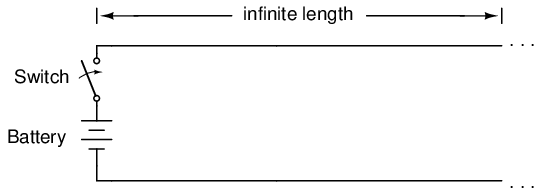
Conduciendo una línea de transmisión infinita.
A pesar de poder evitar la resistencia de los cables mediante el uso de superconductores en este "experimento mental", no podemos eliminar la capacitancia a lo largo de la longitud de los cables.AnyUn par de conductores separados por un medio aislante crea capacitancia entre esos conductores: (Figura below)
{kind=link}
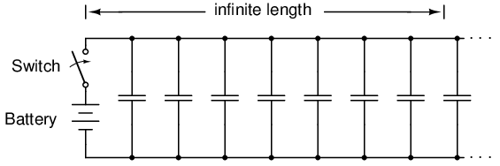
Circuito equivalente que muestra capacitancia parásita entre conductores.
El voltaje aplicado entre dos conductores crea un campo eléctrico entre esos conductores. La energía se almacena en este campo eléctrico, y este almacenamiento de energía da como resultado una oposición al cambio de voltaje. La reacción de una capacitancia contra los cambios de voltaje se describe mediante la ecuación i = C(de/dt), que nos dice que la corriente se consumirá proporcionalmente a la tasa de cambio del voltaje a lo largo del tiempo. Por lo tanto, cuando el interruptor está cerrado, la capacitancia entre los conductores reaccionará contra el aumento repentino de voltaje cargándose y extrayendo corriente de la fuente. Según la ecuación, un aumento instantáneo en el voltaje aplicado (producido por el cierre perfecto del interruptor) da lugar a una corriente de carga infinita.
Sin embargo, la corriente consumida por un par de cables paralelos no será infinita, porque existe una impedancia en serie a lo largo de los cables debido a la inductancia. (Cifra below) Recuerde que la corriente a travésanyEl conductor desarrolla un campo magnético de magnitud proporcional.La energía se almacena en este campo magnético (Figura below) y este almacenamiento de energía da como resultado una oposición al cambio de corriente. Cada cable desarrolla un campo magnético a medida que transporta corriente de carga para la capacitancia entre los cables y, al hacerlo, cae el voltaje de acuerdo con la ecuación de inductancia e = L(di/dt). Esta caída de voltaje limita la tasa de cambio de voltaje a través de la capacitancia distribuida, evitando que la corriente alcance una magnitud infinita:
{kind=link}
{kind=link}
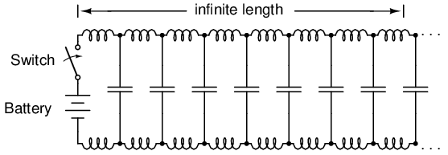
Circuito equivalente que muestra capacitancia e inductancia parásitas.
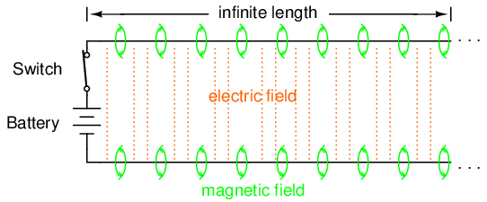
Capacitancia de cargas de voltaje, inductancia de cargas de corriente.
Debido a que los electrones en los dos cables transfieren movimiento entre sí casi a la velocidad de la luz, el "frente de onda" del cambio de voltaje y corriente se propagará a lo largo de los cables a la misma velocidad, lo que resultará en que la capacitancia e inductancia distribuidas se carguen progresivamente hasta alcanzar el voltaje y la corriente máximos, respectivamente, así: (Figuras below, below, below, below)
{kind=link}
{kind=link}
{kind=link}
{kind=link}
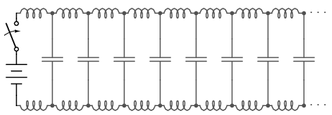
Línea de transmisión descargada.
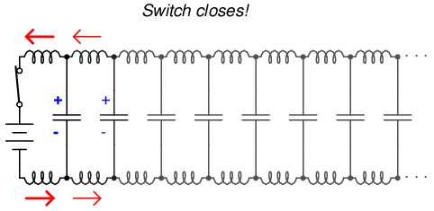
Comience la propagación de ondas.
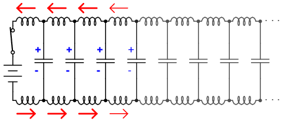
Continuar la propagación de las ondas.
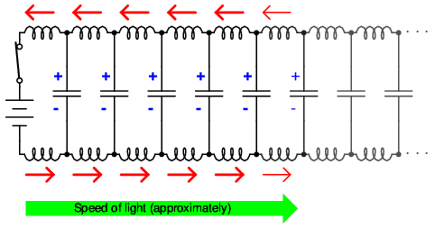
Propagar a la velocidad de la luz.
El resultado final de estas interacciones es una corriente constante de magnitud limitada a través de la fuente de la batería. Dado que los cables son infinitamente largos, su capacitancia distribuida nunca se cargará completamente al voltaje de la fuente y su inductancia distribuida nunca permitirá una corriente de carga ilimitada. En otras palabras, este par de cables extraerá corriente de la fuente siempre que el interruptor esté cerrado, comportándose como una carga constante. Los cables ya no son meros conductores de corriente eléctrica y portadores de tensión, sino que ahora constituyen un componente del circuito en sí mismos, con características únicas. Los dos cables ya no son simplementeun par de conductores, sino más bien unlínea de transmisión.
Como carga constante, la respuesta de la línea de transmisión al voltaje aplicado es resistiva en lugar de reactiva, a pesar de estar compuesta puramente de inductancia y capacitancia (suponiendo cables superconductores con resistencia cero). Podemos decir esto porque, desde la perspectiva de la batería, no hay diferencia entre una resistencia que disipa energía eternamente y una línea de transmisión infinita que absorbe energía eternamente. La impedancia (resistencia) de esta línea en ohmios se llamaimpedancia característica, y está fijado por la geometría de los dos conductores. Para una línea de hilos paralelos con aislamiento de aire, la impedancia característica se puede calcular de la siguiente manera:
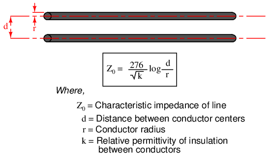
Si la línea de transmisión es de construcción coaxial, la impedancia característica sigue una ecuación diferente:
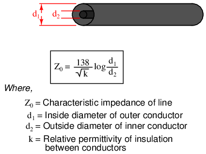
En ambas ecuaciones se deben utilizar unidades de medida idénticas en ambos términos de la fracción. Si el material aislante no es aire (o vacío), tanto la impedancia característica como la velocidad de propagación se verán afectadas. La relación entre la verdadera velocidad de propagación de una línea de transmisión y la velocidad de la luz en el vacío se llamafactor de velocidadde esa línea.
El factor de velocidad es puramente un factor de la permitividad relativa del material aislante (también conocida como suconstante dieléctrica), definido como la relación entre la permitividad del campo eléctrico de un material y la del vacío puro. El factor de velocidad de cualquier tipo de cable, coaxial o no, se puede calcular de forma muy sencilla mediante la siguiente fórmula:
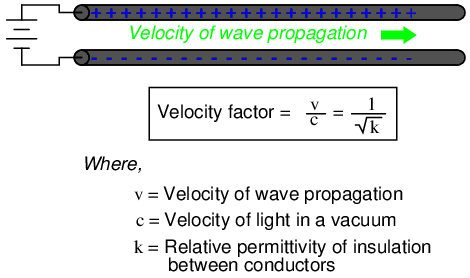
La impedancia característica también se conoce comoimpedancia natural, y se refiere a la resistencia equivalente de una línea de transmisión si fuera infinitamente larga, debido a la capacitancia e inductancia distribuidas a medida que las “ondas” de voltaje y corriente se propagan a lo largo de su longitud a una velocidad de propagación igual a una gran fracción de la velocidad de la luz.
Se puede ver en cualquiera de las dos primeras ecuaciones que la impedancia característica de una línea de transmisión (Z0) aumenta a medida que aumenta la separación entre conductores. Si los conductores se alejan uno del otro, la capacitancia distribuida disminuirá (mayor espacio entre las “placas” del capacitor) y la inductancia distribuida aumentará (menor cancelación de los dos campos magnéticos opuestos). Menos capacitancia en paralelo y más inductancia en serie dan como resultado una corriente más pequeña consumida por la línea para cualquier cantidad dada de voltaje aplicado, que por definición es una impedancia mayor. Por el contrario, acercar los dos conductores aumenta la capacitancia en paralelo y disminuye la inductancia en serie. Ambos cambios dan como resultado una corriente mayor consumida para un voltaje aplicado determinado, lo que equivale a una impedancia menor.
Salvo efectos disipativos como “fugas” dieléctricas y resistencia del conductor, la impedancia característica de una línea de transmisión es igual a la raíz cuadrada de la relación de la inductancia de la línea por unidad de longitud dividida por la capacitancia de la línea por unidad de longitud:
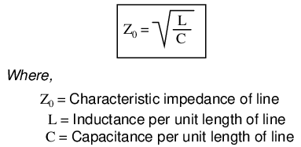
- REVISAR:
- A línea de transmisiónes un par de conductores paralelos que exhiben ciertas características debido a la capacitancia e inductancia distribuidas a lo largo de su longitud.
- Cuando se aplica repentinamente un voltaje a un extremo de una línea de transmisión, tanto una "onda" de voltaje como una "onda" de corriente se propagan a lo largo de la línea a casi la velocidad de la luz.
- Si se aplica un voltaje de CC a un extremo de una línea de transmisión infinitamente larga, la línea extraerá corriente de la fuente de CC como si fuera una resistencia constante.
- The impedancia característica (Z0) de una línea de transmisión es la resistencia que exhibiría si tuviera una longitud infinita. Esto es completamente diferente de la resistencia a las fugas del dieléctrico que separa los dos conductores y de la resistencia metálica de los propios cables. La impedancia característica es puramente una función de la capacitancia y la inductancia distribuidas a lo largo de la línea, y existiría incluso si el dieléctrico fuera perfecto (resistencia paralela infinita) y los cables superconductores (resistencia en serie cero).
- factor de velocidades un valor fraccionario que relaciona la velocidad de propagación de una línea de transmisión con la velocidad de la luz en el vacío. Los valores oscilan entre 0,66 y 0,80 para líneas típicas de dos hilos y cables coaxiales. Para cualquier tipo de cable, es igual al recíproco (1/x) de la raíz cuadrada de la permitividad relativa del aislamiento del cable.
Finite-length transmission lines
Una línea de transmisión de longitud infinita es una abstracción interesante, pero físicamente imposible. Todas las líneas de transmisión tienen una longitud finita y, como tal, no se comportan exactamente igual que una línea infinita. Si ese trozo de cable “RG-58/U” de 50 Ω que medí con un óhmetro hace años hubiera sido infinitamente largo, en realidad habría podido medir 50 Ω de resistencia entre los conductores interior y exterior. Pero no tenía una longitud infinita, por lo que se midió como "abierto" (resistencia infinita).
No obstante, la clasificación de impedancia característica de una línea de transmisión es importante incluso cuando se trata de longitudes limitadas. Un término antiguo para impedancia característica, que me gusta por su valor descriptivo, esimpedancia de sobretensión. Si se aplica un voltaje transitorio (un “sobrevoltaje”) al final de una línea de transmisión, la línea consumirá una corriente proporcional a la magnitud del voltaje de sobretensión dividida por la impedancia de sobretensión de la línea (I=E/Z). Esta sencilla relación de la Ley de Ohm entre corriente y voltaje se mantendrá durante un período de tiempo limitado, pero no indefinidamente.
Si el extremo de una línea de transmisión tiene un circuito abierto, es decir, se deja desconectado, la "onda" actual que se propaga a lo largo de la línea tendrá que detenerse en el extremo, ya que los electrones no pueden fluir donde no hay un camino continuo. Este cese abrupto de la corriente en el extremo de la línea provoca que se produzca una "acumulación" a lo largo de la línea de transmisión, ya que los electrones sucesivamente no encuentran adónde ir. Imagine un tren que viaja por la vía con holgura entre los acoplamientos del vagón: si el vagón líder choca repentinamente contra una barricada inamovible, se detendrá, lo que provocará que el que está detrás de él se detenga tan pronto como se tome la holgura del primer acoplamiento, lo que hace que el siguiente vagón se detenga tan pronto como se tome la holgura del siguiente acoplamiento, y así sucesivamente hasta que se detenga el último vagón. El tren no se detiene al mismo tiempo, sino secuencialmente desde el primer vagón hasta el último: (Figura below)
{kind=link}
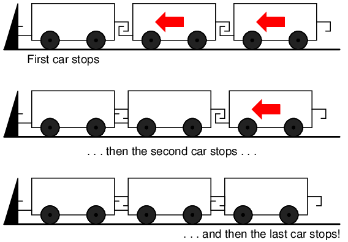
Onda reflejada.
Una señal que se propaga desde el extremo fuente de una línea de transmisión hasta el extremo de carga se llamaonda incidente. La propagación de una señal desde el extremo de la carga hasta el extremo de la fuente (como lo que sucedió en este ejemplo cuando la corriente encuentra el final de una línea de transmisión en circuito abierto) se llamaonda reflejada.
Cuando esta “acumulación” de electrones se propaga de regreso a la batería, la corriente en la batería cesa y la línea actúa como un simple circuito abierto. Todo esto sucede muy rápidamente para líneas de transmisión de longitud razonable, por lo que una medición del óhmetro de la línea nunca revela el breve período de tiempo en el que la línea realmente se comporta como una resistencia. Para un cable de una milla de largo con un factor de velocidad de 0,66 (la velocidad de propagación de la señal es el 66% de la velocidad de la luz, o 122.760 millas por segundo), se necesita sólo 1/122.760 de segundo (8,146 microsegundos) para que una señal viaje de un extremo al otro. Para que la señal actual llegue al final de la línea y se "refleje" hacia la fuente, el tiempo de ida y vuelta es el doble de esta cifra, o 16,292 µs.
Los instrumentos de medición de alta velocidad pueden detectar este tiempo de tránsito desde la fuente hasta el final de la línea y de regreso a la fuente nuevamente, y pueden usarse para determinar la longitud de un cable. Esta técnica también se puede utilizar para determinar la presenciaandUbicación de una rotura en uno o ambos conductores del cable, ya que una corriente se "reflejará" en la rotura del cable tal como lo hará en el extremo de un cable en circuito abierto. Los instrumentos diseñados para tales fines se denominanreflectómetros en el dominio del tiempo(TDR). El principio básico es idéntico al de la telemetría por sonar: generar un pulso sonoro y medir el tiempo que tarda en regresar el eco.
Un fenómeno similar ocurre si el final de una línea de transmisión sufre un cortocircuito: cuando el frente de onda de voltaje llega al final de la línea, se refleja de regreso a la fuente, porque no puede existir voltaje entre dos puntos eléctricamente comunes. Cuando esta onda reflejada llega a la fuente, la fuente ve toda la línea de transmisión como un cortocircuito. Nuevamente, esto sucede tan rápido como la señal puede propagarse ida y vuelta hacia abajo y hacia arriba por la línea de transmisión a cualquier velocidad permitida por el material dieléctrico entre los conductores de la línea.
Un experimento sencillo ilustra el fenómeno de la reflexión de las ondas en las líneas de transmisión. Tome un trozo de cuerda por un extremo y "agítelo" con un rápido movimiento hacia arriba y hacia abajo de la muñeca. Se puede ver una onda viajando a lo largo de la cuerda hasta que se disipa por completo debido a la fricción: (Figura below)
{kind=link}
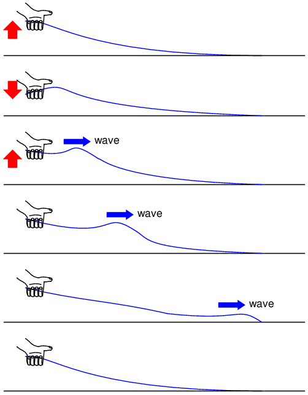
Línea de transmisión con pérdidas.
Esto es análogo a una línea de transmisión larga con pérdida interna: la señal se debilita constantemente a medida que se propaga a lo largo de la línea, sin reflejarse nunca de nuevo en la fuente. Sin embargo, si el otro extremo de la cuerda está asegurado a un objeto sólido en un punto antes de la disipación total de la onda incidente, una segunda onda se reflejará en su mano: (Figura below)
{kind=link}
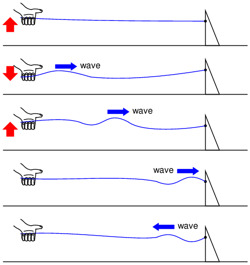
Onda reflejada.
Generalmente, el propósito de una línea de transmisión es transportar energía eléctrica de un punto a otro. Incluso si las señales están destinadas únicamente a información y no a alimentar algún dispositivo de carga importante, la situación ideal sería que toda la energía de la señal original viaje desde la fuente a la carga y luego sea completamente absorbida o disipada por la carga para obtener la máxima relación señal-ruido. Por lo tanto, la “pérdida” a lo largo de una línea de transmisión es indeseable, al igual que las ondas reflejadas, ya que la energía reflejada es energía que no se entrega al dispositivo final.
Las reflexiones pueden eliminarse de la línea de transmisión si la impedancia de la carga es exactamente igual a la impedancia característica (“sobretensión”) de la línea. Por ejemplo, un cable coaxial de 50 Ω que esté en circuito abierto o en cortocircuito reflejará toda la energía incidente de regreso a la fuente. Sin embargo, si se conecta una resistencia de 50 Ω al final del cable, no habrá energía reflejada y toda la energía de la señal será disipada por la resistencia.
Esto tiene mucho sentido si volvemos a nuestro ejemplo hipotético de línea de transmisión de longitud infinita. Una línea de transmisión con impedancia característica de 50 Ω y longitud infinita se comporta exactamente como una resistencia de 50 Ω medida desde un extremo. (Cifra below) Si cortamos esta línea a una longitud finita, se comportará como una resistencia de 50 Ω para una fuente constante de voltaje CC durante un breve tiempo, pero luego se comportará como un circuito abierto o un cortocircuito, dependiendo de la condición en la que dejemos el extremo cortado de la línea: abierto (Figura below) o en corto. (Cifra below) Sin embargo, si nosotrosterminarla línea con una resistencia de 50 Ω, la línea volverá a comportarse como una resistencia de 50 Ω, indefinidamente: lo mismo que si volviera a ser de longitud infinita: (Figura below)
{kind=link}
{kind=link}
{kind=link}
{kind=link}
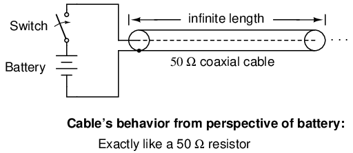
La línea de transmisión infinita parece una resistencia.
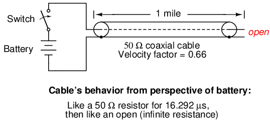
Transmisión de una milla.
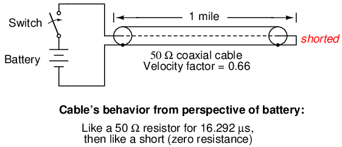
Línea de transmisión en cortocircuito.
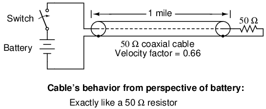
Línea terminada en impedancia característica.
En esencia, una resistencia terminal que coincide con la impedancia natural de la línea de transmisión hace que la línea "parezca" infinitamente larga desde la perspectiva de la fuente, porque una resistencia tiene la capacidad de disipar energía eternamente de la misma manera que una línea de transmisión de longitud infinita es capaz de absorber energía eternamente.
Las ondas reflejadas también se manifestarán si la resistencia terminal no es exactamente igual a la impedancia característica de la línea de transmisión, no solo si la línea se deja desconectada (abierta) o puenteada (en cortocircuito). Aunque la reflexión de energía no será total con una impedancia terminal de ligero desajuste, será parcial. Esto sucede ya sea que la resistencia terminal esté o nomayor que or menosque la impedancia característica de la línea.
También pueden producirse nuevos reflejos de una onda reflejada en elfinal de la fuentede una línea de transmisión, si la impedancia interna de la fuente (impedancia equivalente de Thevenin) no es exactamente igual a la impedancia característica de la línea. Una onda reflejada que regresa a la fuente se disipará por completo si la impedancia de la fuente coincide con la de la línea, pero se reflejará hacia el final de la línea como otra onda incidente, al menos parcialmente, si la impedancia de la fuente no coincide con la línea. Este tipo de reflexión puede ser particularmente problemática, ya que hace que parezca que la fuente ha transmitido otro pulso.
- REVISAR:
- La impedancia característica también se conoce comoimpedancia de sobretensión, debido al comportamiento temporalmente resistivo de líneas de transmisión de cualquier longitud.
- Una línea de transmisión de longitud finita aparecerá ante una fuente de voltaje de CC como una resistencia constante durante un breve período de tiempo y luego como cualquier impedancia con la que termine la línea. Por lo tanto, un cable con el extremo abierto simplemente se lee "abierto" cuando se mide con un óhmetro y "en cortocircuito" cuando su extremo está en cortocircuito.
- Una señal transitoria (“sobretensión”) aplicada a un extremo de una línea de transmisión abierta o en cortocircuito se “reflejará” en el otro extremo de la línea como una onda secundaria. Una señal que viaja por una línea de transmisión desde la fuente hasta la carga se llamaonda incidente; Una señal que “rebota” en el extremo de una línea de transmisión, viajando desde la carga hasta la fuente, se llama señal.onda reflejada.
- Las ondas reflejadas también aparecerán en líneas de transmisión terminadas en resistencias que no coinciden exactamente con la impedancia característica.
- Se puede hacer que una línea de transmisión de longitud finita parezca de longitud infinita si termina con una resistencia de igual valor a la impedancia característica de la línea. Esto elimina todos los reflejos de la señal.
- Una onda reflejada puede volver a reflejarse en el extremo de la fuente de una línea de transmisión si la impedancia interna de la fuente no coincide con la impedancia característica de la línea. Esta onda reflejada aparecerá, por supuesto, como otra señal de pulso transmitida desde la fuente.
“Long” and “short” transmission lines
En los circuitos de CC y CA de baja frecuencia, generalmente se ignora la impedancia característica de los cables paralelos. Esto incluye el uso de cables coaxiales en circuitos de instrumentos, a menudo empleados para proteger señales de voltaje débiles para que no sean corrompidas por el "ruido" inducido causado por campos eléctricos y magnéticos parásitos. Esto se debe a los lapsos de tiempo relativamente cortos en los que tienen lugar las reflexiones en la línea, en comparación con el período de las formas de onda o pulsos de las señales significativas en el circuito. Como vimos en la última sección, si una línea de transmisión está conectada a una fuente de voltaje de CC, se comportará como una resistencia de igual valor a la impedancia característica de la línea solo durante el tiempo que le toma al pulso incidente llegar al final de la línea y regresar como un pulso reflejado a la fuente. Después de ese tiempo (unos breves 16,292 µs para el cable coaxial de una milla de largo del último ejemplo), la fuente “ve” sólo la impedancia terminal, cualquiera que sea.
Si el circuito en cuestión maneja energía de CA de baja frecuencia, esos breves retrasos introducidos por una línea de transmisión entre el momento en que la fuente de CA genera un pico de voltaje y el momento en que la fuente "ve" ese pico cargado por la impedancia terminal (tiempo de ida y vuelta para que la onda incidente llegue al final de la línea y se refleje hacia la fuente) tienen pocas consecuencias. Aunque sabemos que las magnitudes de las señales a lo largo de la longitud de la línea no son iguales en un momento dado debido a la propagación de la señal a (casi) la velocidad de la luz, la diferencia de fase real entre las señales de inicio y fin de línea es insignificante, porque las propagaciones de la longitud de la línea ocurren dentro de una fracción muy pequeña del período de la forma de onda de CA. Para todos los propósitos prácticos, podemos decir que el voltaje a lo largo de todos los puntos respectivos en una línea de dos conductores de baja frecuencia es igual y está en fase entre sí en cualquier momento dado.
En estos casos, podemos decir que las líneas de transmisión en cuestión soneléctricamente corto, porque sus efectos de propagación son mucho más rápidos que los períodos de las señales conducidas. Por el contrario, uneléctricamente largoLa línea es aquella en la que el tiempo de propagación es una fracción grande o incluso un múltiplo del período de la señal. Generalmente se considera que una línea “larga” es aquella en la que la forma de onda de la señal de la fuente completa al menos un cuarto de ciclo (90ode “rotación”) antes de que la señal incidente llegue al final de la línea. Hasta este capítulo en elLecciones en circuitos eléctricosserie de libros, se supuso que todas las líneas de conexión eran eléctricamente cortas.
Para poner esto en perspectiva, necesitamos expresar la distancia recorrida por una señal de voltaje o corriente a lo largo de una línea de transmisión en relación con su frecuencia fuente. Una forma de onda de CA con una frecuencia de 60 Hz completa un ciclo en 16,66 ms. A la velocidad de la luz (186.000 millas/s), esto equivale a una distancia de 3100 millas que una señal de voltaje o corriente se propagará en ese tiempo. Si el factor de velocidad de la línea de transmisión es menor que 1, la velocidad de propagación será menor que 186,000 millas por segundo y la distancia será menor en el mismo factor. Pero incluso si usáramos el factor de velocidad del cable coaxial del último ejemplo (0,66), ¡la distancia sigue siendo muy larga, 2046 millas! Cualquier distancia que calculemos para una frecuencia dada se llamalongitud de ondade la señal.
Una fórmula sencilla para calcular la longitud de onda es la siguiente:
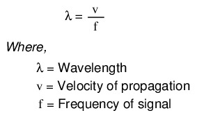
La letra griega minúscula “lambda” (λ) representa la longitud de onda, en cualquier unidad de longitud utilizada en la cifra de velocidad (si son millas por segundo, entonces la longitud de onda en millas; si son metros por segundo, entonces la longitud de onda en metros). La velocidad de propagación suele ser la velocidad de la luz cuando se calcula la longitud de onda de la señal al aire libre o en el vacío, pero será menor si la línea de transmisión tiene un factor de velocidad menor que 1.
Si se considera que una línea "larga" tiene al menos 1/4 de longitud de onda, se puede ver por qué todas las líneas de conexión en los circuitos analizados hasta ahora se han asumido como "cortas". Para un sistema de energía CA de 60 Hz, las líneas eléctricas tendrían que exceder las 775 millas de longitud antes de que los efectos del tiempo de propagación se volvieran significativos. Los cables que conectan un amplificador de audio a los altavoces tendrían que tener más de 4,65 millas de largo antes de que los reflejos de las líneas impactaran significativamente una señal de audio de 10 kHz.
Sin embargo, cuando se trata de sistemas de radiofrecuencia, la longitud de la línea de transmisión está lejos de ser trivial. Considere una señal de radio de 100 MHz: su longitud de onda es de apenas 9,8202 pies, incluso a la velocidad máxima de propagación de la luz (186.000 millas/s). Una línea de transmisión que transmita esta señal no tendría que tener más de 2-1/2 pies de largo para ser considerada “larga”. Con un factor de velocidad del cable de 0,66, esta longitud crítica se reduce a 1,62 pies.
Cuando una fuente eléctrica se conecta a una carga a través de una línea de transmisión "corta", la impedancia de la carga domina el circuito. Es decir, cuando la línea es corta, su propia impedancia característica tiene pocas consecuencias para el comportamiento del circuito. Esto lo vemos cuando probamos un cable coaxial con un óhmetro: el cable indica "abierto" desde el conductor central hasta el conductor exterior si el extremo del cable no está terminado. Aunque la línea actúa como una resistencia durante un período de tiempo muy breve después de conectar el medidor (aproximadamente 50 Ω para un cable RG-58/U), inmediatamente después se comporta como un simple "circuito abierto": la impedancia del extremo abierto de la línea. Dado que el tiempo de respuesta combinado de un óhmetro y el del ser humano que lo utilizasupera con crecesEl tiempo de propagación de ida y vuelta hacia arriba y hacia abajo del cable es "eléctricamente corto" para esta aplicación y solo registramos la impedancia terminal (carga). Es la velocidad extrema de la señal propagada lo que nos hace incapaces de detectar la impedancia transitoria de 50 Ω del cable con un óhmetro.
Si usamos un cable coaxial para conducir un voltaje o corriente CC a una carga, y ningún componente en el circuito es capaz de medir o responder lo suficientemente rápido como para "notar" una onda reflejada, el cable se considera "eléctricamente corto" y su impedancia es irrelevante para la función del circuito. Observe cómo la “corteza” eléctrica de un cable es relativa a la aplicación: en un circuito de CC donde los valores de voltaje y corriente cambian lentamente, casi cualquier longitud física de cable se consideraría “corta” desde el punto de vista de la impedancia característica y las ondas reflejadas. Sin embargo, tomar la misma longitud de cable y usarlo para conducir una señal de CA de alta frecuencia podría dar como resultado una evaluación muy diferente de la “corteza” de ese cable.
Cuando una fuente se conecta a una carga a través de una línea de transmisión “larga”, la impedancia característica propia de la línea domina sobre la impedancia de la carga para determinar el comportamiento del circuito. En otras palabras, una línea eléctricamente “larga” actúa como el componente principal del circuito, y sus propias características eclipsan las de la carga. Con una fuente conectada a un extremo del cable y una carga al otro, la corriente extraída de la fuente es una función principalmente de la línea y no de la carga. Esto es cada vez más cierto cuanto más larga es la línea de transmisión. Considere nuestro hipotético cable de 50 Ω de longitud infinita, seguramente el mejor ejemplo de una línea de transmisión “larga”: no importa qué tipo de carga conectemos a un extremo de esta línea, la fuente (conectada al otro extremo) solo verá 50 Ω de impedancia, porque la longitud infinita de la línea impide que la señalalguna vez alcanzandoel extremo donde se conecta la carga. En este escenario, la impedancia de línea define exclusivamente el comportamiento del circuito, haciendo que la carga sea completamente irrelevante.
La forma más eficaz de minimizar el impacto de la longitud de la línea de transmisión en el comportamiento del circuito es hacer coincidir la impedancia característica de la línea con la impedancia de carga. Si la impedancia de carga es igual a la impedancia de línea, entoncesanyLa fuente de señal conectada al otro extremo de la línea "verá" exactamente la misma impedancia y tendrá exactamente la misma cantidad de corriente extraída de ella, independientemente de la longitud de la línea. En esta condición de perfecta adaptación de impedancia, la longitud de la línea solo afecta la cantidad de tiempo de retraso desde la salida de la señal en la fuente hasta la llegada de la señal a la carga. Sin embargo, la combinación perfecta de las impedancias de línea y carga no siempre es práctica o posible.
La siguiente sección analiza los efectos de las líneas de transmisión “largas”, especialmente cuando la longitud de la línea coincide con fracciones o múltiplos específicos de la longitud de onda de la señal.
- REVISAR:
- El cableado coaxial se utiliza a veces en circuitos de CC y CA de baja frecuencia, así como en circuitos de alta frecuencia, por la excelente inmunidad al "ruido" inducido que proporciona a las señales.
- Cuando el período de una señal de voltaje o corriente transmitida excede en gran medida el tiempo de propagación de una línea de transmisión, la línea se consideraeléctricamente corto. Por el contrario, cuando el tiempo de propagación es una fracción grande o múltiplo del período de la señal, la línea se consideraeléctricamente largo.
- una señallongitud de ondaes la distancia física que se propagará en el lapso de tiempo de un período. La longitud de onda se calcula mediante la fórmula λ=v/f, donde “λ” es la longitud de onda, “v” es la velocidad de propagación y “f” es la frecuencia de la señal.
- Una regla general para la "corteza" de una línea de transmisión es que la línea debe tener al menos 1/4 de longitud de onda antes de que se considere "larga".
- En un circuito con una línea "corta", la impedancia terminal (carga) domina el comportamiento del circuito. La fuente efectivamente no ve nada más que la impedancia de la carga, salvo pérdidas resistivas en la línea de transmisión.
- En un circuito con una línea “larga”, la propia impedancia característica de la línea domina el comportamiento del circuito. El último ejemplo de esto es una línea de transmisión de longitud infinita: dado que la señalnuncaCuando alcanza la impedancia de carga, la fuente sólo “ve” la impedancia característica del cable.
- Cuando una línea de transmisión termina con una carga que coincide exactamente con su impedancia, no hay ondas reflejadas y, por lo tanto, no hay problemas con la longitud de la línea.
Standing waves and resonance
Siempre que haya una falta de coincidencia de impedancia entre la línea de transmisión y la carga, se producirán reflexiones. Si la señal incidente es una forma de onda de CA continua, estas reflexiones se mezclarán con más forma de onda incidente entrante para producir formas de onda estacionarias llamadasondas estacionarias.
La siguiente ilustración muestra cómo una forma de onda incidente en forma de triángulo se convierte en un reflejo de imagen especular al llegar al extremo no terminado de la línea. En aras de la simplicidad, la línea de transmisión en esta secuencia ilustrativa se muestra como una línea única y gruesa en lugar de un par de cables. La onda incidente se muestra viajando de izquierda a derecha, mientras que la onda reflejada viaja de derecha a izquierda: (Figura below)
{kind=link}
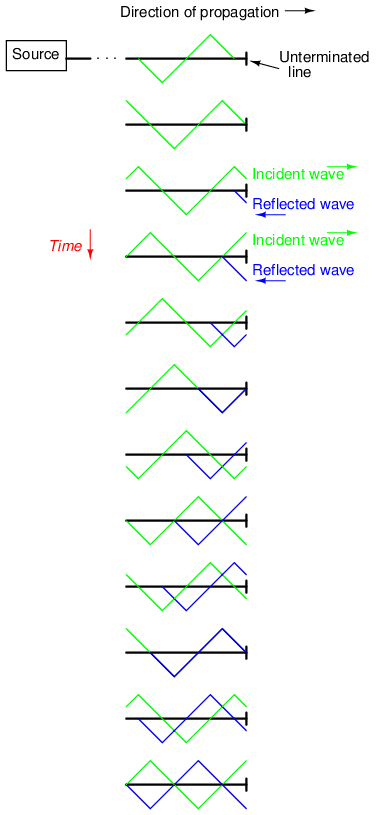
La onda incidente se refleja en el extremo de una línea de transmisión no terminada.
Si sumamos las dos formas de onda, encontramos que se crea una tercera forma de onda estacionaria a lo largo de la longitud de la línea: (Figura below)
{kind=link}
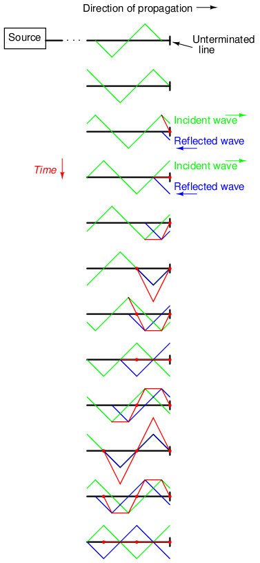
La suma de las ondas incidente y reflejada es una onda estacionaria.
Esta tercera onda, "estacionaria", de hecho, representa el único voltaje a lo largo de la línea, siendo la suma representativa de las ondas de voltaje incidentes y reflejadas. Oscila en magnitud instantánea, pero no se propaga a lo largo del cable como las formas de onda incidentes o reflejadas que lo causan. Observe los puntos a lo largo de la línea que marcan los puntos "cero" de la onda estacionaria (donde las ondas incidente y reflejada se cancelan entre sí), y cómo esos puntos nunca cambian de posición: (Figura below)
{kind=link}
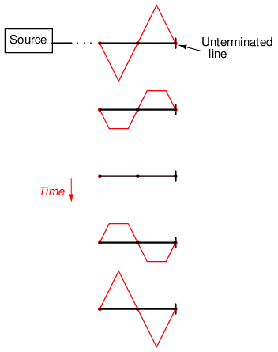
La onda estacionaria no se propaga a lo largo de la línea de transmisión.
Las ondas estacionarias son bastante abundantes en el mundo físico. Considere una cuerda o cuerda, sacudida en un extremo y atada en el otro (solo se muestra medio ciclo de movimiento de la mano, moviéndose hacia abajo): (Figura below)
{kind=link}
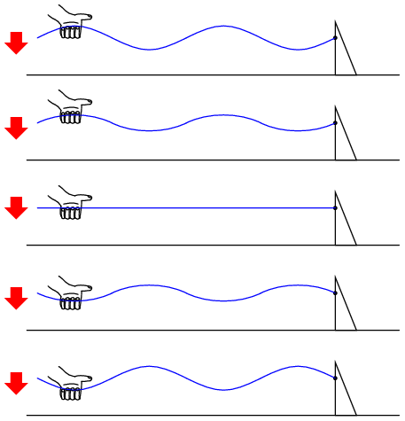
Ondas estacionarias sobre una cuerda.
Tanto los nodos (puntos de poca o ninguna vibración) como los antinodos (puntos de máxima vibración) permanecen fijos a lo largo de la cuerda o cuerda. El efecto es más pronunciado cuando el extremo libre se agita con la frecuencia adecuada. Las cuerdas pulsadas exhiben el mismo comportamiento de "onda estacionaria", con "nodos" de vibración máxima y mínima a lo largo de su longitud. La principal diferencia entre una cuerda pulsada y una cuerda sacudida es que la cuerda pulsada proporciona su propia frecuencia de vibración "correcta" para maximizar el efecto de onda estacionaria: (Figura below)
{kind=link}
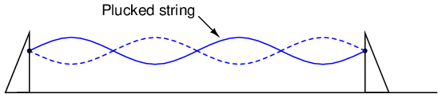
Ondas estacionarias en una cuerda pulsada.
El viento que sopla a través de un tubo de extremo abierto también produce ondas estacionarias; esta vez, las ondas son vibraciones de moléculas de aire (sonido) dentro del tubo en lugar de vibraciones de un objeto sólido. Que la onda estacionaria termine en un nodo (amplitud mínima) o en un antinodo (amplitud máxima) depende de si el otro extremo del tubo está abierto o cerrado: (Figura below)
{kind=link}
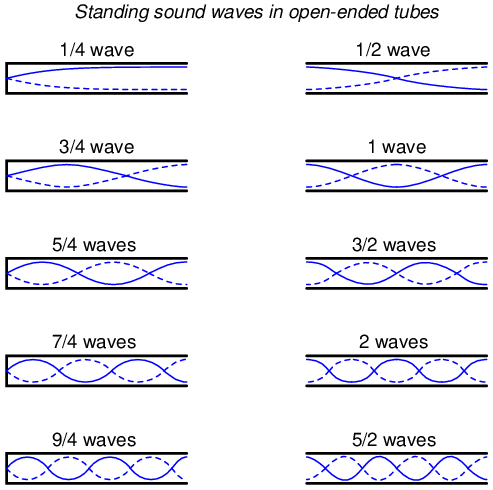
Ondas sonoras estacionarias en tubos con extremos abiertos.
Un extremo de tubo cerrado debe ser un nodo de onda, mientras que un extremo de tubo abierto debe ser un antinodo. Por analogía, el extremo anclado de una cuerda vibrante debe ser un nodo, mientras que el extremo libre (si lo hay) debe ser un antinodo.
Observe cómo hay más de una longitud de onda adecuada para producir ondas estacionarias de aire vibrante dentro de un tubo que coinciden exactamente con los puntos finales del tubo. Esto es cierto para todos los sistemas de ondas estacionarias: las ondas estacionarias resonarán con el sistema para cualquier frecuencia (longitud de onda) correlacionada con los puntos de nodo/antinodo del sistema. Otra forma de decir esto es que existen múltiples frecuencias de resonancia para cualquier sistema que soporte ondas estacionarias.
Todas las frecuencias más altas son múltiplos enteros de la frecuencia más baja (fundamental) del sistema. La progresión secuencial de armónicos de una frecuencia resonante a la siguiente define laarmónicofrecuencias para el sistema: (Figura below)
{kind=link}
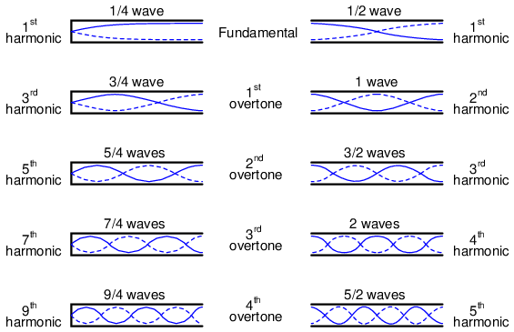
Armónicos (armónicos) en tubos de extremo abierto.
Las frecuencias reales (medidas en Hertz) para cualquiera de estos armónicos o armónicos dependen de la longitud física del tubo y de la velocidad de propagación de las ondas, que es la velocidad del sonido en el aire.
Debido a que las líneas de transmisión soportan ondas estacionarias y obligan a estas ondas a poseer nodos y antinodos según el tipo de impedancia de terminación en el extremo de la carga, también exhiben resonancia en frecuencias determinadas por la longitud física y la velocidad de propagación. Sin embargo, la resonancia de una línea de transmisión es un poco más compleja que la resonancia de cuerdas o de aire en tubos, porque debemos considerar tanto las ondas de voltaje como las de corriente.
Esta complejidad se hace más fácil de entender mediante simulación por computadora. Para comenzar, examinemos una fuente, una línea de transmisión y una carga perfectamente coincidentes. Todos los componentes tienen una impedancia de 75 Ω: (Figura below)
{kind=link}
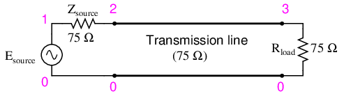
Línea de transmisión perfectamente adaptada.
Usando SPICE para simular el circuito, especificaremos la línea de transmisión (t1) con una impedancia característica de 75 Ω (z0=75) y un retraso de propagación de 1 microsegundo (td=1u). Este es un método conveniente para expresar la longitud física de una línea de transmisión: la cantidad de tiempo que tarda una onda en propagarse en toda su longitud. Si se tratara de un cable real de 75 Ω (tal vez un cable coaxial tipo “RG-59B/U”, el tipo comúnmente utilizado para la distribución de televisión por cable) con un factor de velocidad de 0,66, tendría aproximadamente 648 pies de largo. Dado que 1 µs es el período de una señal de 1 MHz, elegiré barrer la frecuencia de la fuente de CA desde (casi) cero hasta esa cifra, para ver cómo reacciona el sistema cuando se expone a señales que van desde CC hasta 1 longitud de onda.
Aquí está la lista de redes SPICE para el circuito que se muestra arriba:
Transmission line v1 1 0 ac 1 sin rsource 1 2 75 t1 2 0 3 0 z0=75 td=1u rload 3 0 75 .ac lin 101 1m 1meg * Using “Nutmeg” program to plot analysis .end
Al ejecutar esta simulación y trazar la caída de impedancia de la fuente (como una indicación de la corriente), el voltaje de la fuente, el voltaje del extremo de la fuente de la línea y el voltaje de carga, vemos que el voltaje de la fuente, que se muestra comovm(1)(magnitud de voltaje entre el nodo 1 y el punto de tierra implícito del nodo 0) en el gráfico: registra 1 voltio constante, mientras que todos los demás voltajes registran 0,5 voltios constantes: (Figura below)
{kind=link}
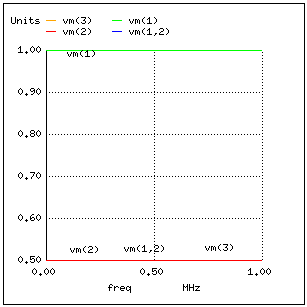
No hay resonancias en una línea de transmisión coincidente.
En un sistema donde todas las impedancias están perfectamente adaptadas, no puede haber ondas estacionarias y, por lo tanto, no puede haber “picos” o “valles” resonantes en el diagrama de Bode.
Ahora, cambiemos la impedancia de carga a 999 MΩ, para simular una línea de transmisión abierta. (Cifra below) Definitivamente deberíamos ver algunos reflejos en la línea ahora a medida que la frecuencia pasa de 1 mHz a 1 MHz: (Figura below)
{kind=link}
{kind=link}
Línea de transmisión de extremo abierto.
Transmission line v1 1 0 ac 1 sin rsource 1 2 75 t1 2 0 3 0 z0=75 td=1u rload 3 0 999meg .ac lin 101 1m 1meg * Using “Nutmeg” program to plot analysis .end
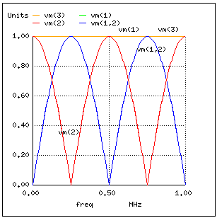
Resonancias en línea de transmisión abierta.
Aquí, tanto la tensión de alimentaciónvm(1)y el voltaje final de carga de la líneavm(3)permanece estable a 1 voltio. Los otros voltajes caen y alcanzan picos en diferentes frecuencias a lo largo del rango de barrido de 1 mHz a 1 MHz. Hay cinco puntos de interés a lo largo del eje horizontal del análisis: 0 Hz, 250 kHz, 500 kHz, 750 kHz y 1 MHz. Investigaremos cada uno con respecto al voltaje y la corriente en diferentes puntos del circuito.
A 0 Hz (en realidad 1 mHz), la señal es prácticamente CC y el circuito se comporta de forma muy similar a como lo haría con una fuente de batería de CC de 1 voltio. No hay corriente en el circuito, como lo indica la caída de voltaje cero a través de la impedancia de la fuente (Zfuente: vm(1,2)), y voltaje de fuente total presente en el extremo de fuente de la línea de transmisión (voltaje medido entre el nodo 2 y el nodo 0:vm(2)). (Cifra below)
{kind=link}
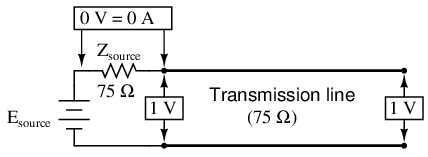
En f=0: entrada: V=1, I=0; final: V=1, I=0.
A 250 kHz, vemos voltaje cero y corriente máxima en el extremo de la fuente de la línea de transmisión, pero todavía voltaje completo en el extremo de la carga: (Figura below)
{kind=link}
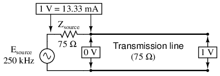
A f=250 KHz: entrada: V=0, I=13,33 mA; final: V=1 I=0.
Quizás te preguntes, ¿cómo puede ser esto? ¿Cómo podemos obtener voltaje de fuente completo en el extremo abierto de la línea mientras hay voltaje cero en su entrada? La respuesta se encuentra en la paradoja de la onda estacionaria. Con una frecuencia de fuente de 250 kHz, la longitud de la línea es exactamente la correcta para que quepa 1/4 de longitud de onda de un extremo a otro. Con el extremo de carga de la línea en circuito abierto, no puede haber corriente, pero habrá voltaje. Por lo tanto, el extremo de carga de una línea de transmisión en circuito abierto es un nodo de corriente (punto cero) y un antinodo de voltaje (amplitud máxima): (Figura below)
{kind=link}
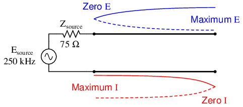
El extremo abierto de la línea de transmisión muestra el nodo actual y el antinodo de voltaje en el extremo abierto.
A 500 kHz, exactamente la mitad de una onda estacionaria descansa sobre la línea de transmisión, y aquí vemos otro punto en el análisis donde la corriente de la fuente cae a nada y el voltaje del extremo de la fuente de la línea de transmisión aumenta nuevamente al voltaje total: (Figura below)
{kind=link}
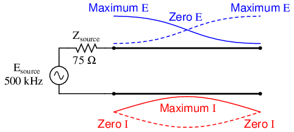
Onda estacionaria completa en una línea de transmisión abierta de media onda.
A 750 kHz, el gráfico se parece mucho a 250 kHz: voltaje cero en el extremo de la fuente (vm(2)) y corriente máxima (vm(1,2)). Esto se debe a que 3/4 de una onda se encuentra a lo largo de la línea de transmisión, lo que hace que la fuente "ve" un cortocircuito donde se conecta a la línea de transmisión, aunque el otro extremo de la línea esté en circuito abierto: (Figura below)
{kind=link}
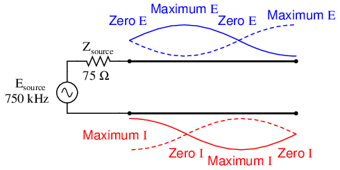
1 1/2 standing waves on 3/4 wave open transmission line.
Cuando la frecuencia de suministro alcanza 1 MHz, existe una onda estacionaria completa en la línea de transmisión. En este punto, el extremo de la fuente de la línea experimenta las mismas amplitudes de voltaje y corriente que el extremo de la carga: voltaje total y corriente cero. En esencia, la fuente “ve” un circuito abierto en el punto donde se conecta a la línea de transmisión. (Cifra below)
{kind=link}
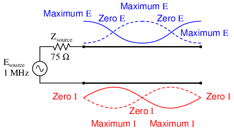
Ondas estacionarias dobles en línea de transmisión abierta de onda completa.
De manera similar, una línea de transmisión en cortocircuito genera ondas estacionarias, aunque las asignaciones de nodo y antinodo para voltaje y corriente están invertidas: en el extremo en cortocircuito de la línea, habrá voltaje cero (nodo) y corriente máxima (antinodo). Lo que sigue es la simulación SPICE (circuito Figura below e ilustraciones de lo que sucede (Figura 2nd-belowen resonancias) en todas las frecuencias interesantes: 0 Hz (Figura below) , 250 kHz (Figure below), 500 kHz (Figure below), 750 kHz (Figure below), y 1 MHz (Figura below). El puente de cortocircuito se simula mediante una impedancia de carga de 1 µΩ: (Figura below)
{kind=link}
{kind=link}
{kind=link}
{kind=link}
{kind=link}
{kind=link}
{kind=link}
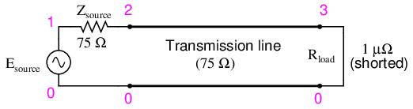
Línea de transmisión en cortocircuito.
Transmission line v1 1 0 ac 1 sin rsource 1 2 75 t1 2 0 3 0 z0=75 td=1u rload 3 0 1u .ac lin 101 1m 1meg * Using “Nutmeg” program to plot analysis .end
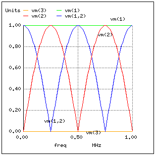
Resonancias en línea de transmisión en cortocircuito.
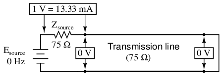
A f=0 Hz: entrada: V=0, I=13,33 mA; final: V=0, I=13,33 mA.
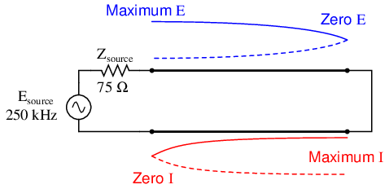
Patrón de onda estacionaria de media onda en una línea de transmisión en cortocircuito de 1/4 de onda.
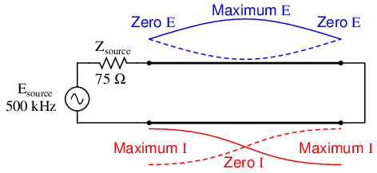
Patrón de onda estacionaria de onda completa en una línea de transmisión en cortocircuito de media onda.
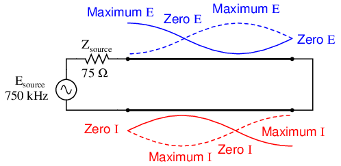
1 1/2 standing wavepattern on 3/4 wave shorted transmission line.
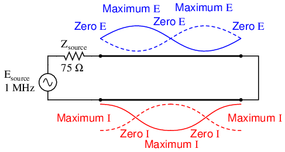
Ondas estacionarias dobles en una línea de transmisión en cortocircuito de onda completa.
En ambos ejemplos de circuito, una línea en circuito abierto y una línea en cortocircuito, la reflexión de energía es total: el 100% de la onda incidente que llega al final de la línea se refleja hacia la fuente. Sin embargo, si la línea de transmisión termina en alguna impedancia que no sea abierta o corta, las reflexiones serán menos intensas, al igual que la diferencia entre los valores mínimo y máximo de voltaje y corriente a lo largo de la línea.
Supongamos que tuviéramos que terminar nuestra línea de ejemplo con una resistencia de 100 Ω en lugar de una resistencia de 75 Ω. (Cifra below) Examine los resultados del análisis SPICE correspondiente para ver los efectos del desajuste de impedancia en diferentes frecuencias de fuente: (Figura below)
{kind=link}
{kind=link}
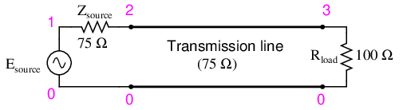
Línea de transmisión terminada en un desajuste
Transmission line v1 1 0 ac 1 sin rsource 1 2 75 t1 2 0 3 0 z0=75 td=1u rload 3 0 100 .ac lin 101 1m 1meg * Using “Nutmeg” program to plot analysis .end
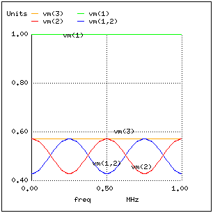
Resonancias débiles en una línea de transmisión no coincidente
Si ejecutamos otro análisis SPICE, esta vez imprimiendo resultados numéricos en lugar de representarlos gráficamente, podemos descubrir exactamente qué está sucediendo en todas las frecuencias interesantes: (CC, figura below; 250 kHz, figura below; 500 kHz, figura below; 750 kHz, figura below; y 1 MHz, Figura below).
{kind=link}
{kind=link}
{kind=link}
{kind=link}
Transmission line v1 1 0 ac 1 sin rsource 1 2 75 t1 2 0 3 0 z0=75 td=1u rload 3 0 100 .ac lin 5 1m 1meg .print ac v(1,2) v(1) v(2) v(3) .end
freq v(1,2) v(1) v(2) v(3) 1.000E-03 4.286E-01 1.000E+00 5.714E-01 5.714E-01 2.500E+05 5.714E-01 1.000E+00 4.286E-01 5.714E-01 5.000E+05 4.286E-01 1.000E+00 5.714E-01 5.714E-01 7.500E+05 5.714E-01 1.000E+00 4.286E-01 5.714E-01 1.000E+06 4.286E-01 1.000E+00 5.714E-01 5.714E-01
En todas las frecuencias, el voltaje de la fuente,v(1), permanece estable a 1 voltio, como debería. El voltaje de carga,v(3), también permanece estable, pero a un voltaje menor: 0,5714 voltios. Sin embargo, tanto el voltaje de entrada de línea (v(2)) y el voltaje cayó a través de la impedancia de 75 Ω de la fuente (v(1,2), que indica la corriente extraída de la fuente) varían con la frecuencia.
A f=0 Hz: entrada: V=0,57,14, I=5,715 mA; final: V=0,5714, I=5,715 mA.
A f=250 KHz: entrada: V=0,4286, I=7,619 mA; final: V=0,5714, I=7,619 mA.
A f=500 KHz: entrada: V=0,5714, I=5,715 mA; final: V=5,714, I=5,715 mA.
A f=750 KHz: entrada: V=0,4286, I=7,619 mA; final: V=0,5714, I=7,619 mA.
A f=1 MHz: entrada: V=0,5714, I=5,715 mA; final: V=0,5714, I=0,5715 mA.
En armónicos impares de la frecuencia fundamental (250 kHz, Figura 3rd-above y 750 kHz, Figura above) Vemos diferentes niveles de voltaje en cada extremo de la línea de transmisión, porque a esas frecuencias las ondas estacionarias terminan en un extremo en un nodo y en el otro extremo en un antinodo. A diferencia de los ejemplos de líneas de transmisión en circuito abierto y en cortocircuito, los niveles de voltaje máximo y mínimo a lo largo de esta línea de transmisión no alcanzan los mismos valores extremos de 0% y 100% de voltaje de fuente, pero todavía tenemos puntos de voltaje "mínimo" y "máximo". (Cifra 6th-above) Lo mismo se aplica a la corriente: si la impedancia terminal de la línea no coincide con la impedancia característica de la línea, tendremos puntos de corriente mínima y máxima en ciertas ubicaciones fijas de la línea, correspondientes a los nodos y antinodos de la onda de corriente estacionaria, respectivamente.
Una forma de expresar la gravedad de las ondas estacionarias es como una relación entre la amplitud máxima (antinodo) y la amplitud mínima (nodo), para voltaje o corriente. Cuando una línea termina en abierto o en corto, estorelación de onda estacionaria, oSWRse valora en el infinito, ya que la amplitud mínima será cero, y cualquier valor finito dividido por cero da como resultado un cociente infinito (en realidad, “indefinido”). En este ejemplo, con una línea de 75 Ω terminada por una impedancia de 100 Ω, la ROE será finita: 1,333, calculada tomando el voltaje de línea máximo a 250 kHz o 750 kHz (0,5714 voltios) y dividiéndolo por el voltaje de línea mínimo (0,4286 voltios).
La relación de onda estacionaria también se puede calcular tomando la impedancia terminal de la línea y la impedancia característica de la línea, y dividiendo el mayor de los dos valores por el menor. En este ejemplo, la impedancia terminal de 100 Ω dividida por la impedancia característica de 75 Ω produce un cociente de exactamente 1,333, que coincide muy estrechamente con el cálculo anterior.
Una línea de transmisión perfectamente terminada tendrá una ROE de 1, ya que el voltaje en cualquier lugar a lo largo de la línea será el mismo, y lo mismo ocurre con la corriente. Nuevamente, esto generalmente se considera ideal, no solo porque las ondas reflejadas constituyen energía que no se entrega a la carga, sino porque los altos valores de voltaje y corriente creados por los antinodos de las ondas estacionarias pueden sobrecargar el aislamiento de la línea de transmisión (alto voltaje) y los conductores (alta corriente), respectivamente.
Además, una línea de transmisión con una ROE alta tiende a actuar como una antena, irradiando energía electromagnética lejos de la línea, en lugar de canalizarla toda hacia la carga. Esto suele ser indeseable, ya que la energía radiada puede "acoplarse" con conductores cercanos, produciendo interferencias en la señal. Una nota interesante a pie de página sobre este punto es que las estructuras de antena, que típicamente se asemejan a líneas de transmisión abiertas o en cortocircuito, a menudo están diseñadas para operar aaltorelaciones de onda estacionaria, con el fin de maximizar la radiación y recepción de la señal.
La siguiente fotografía (Figura below) muestra un conjunto de líneas de transmisión en un punto de unión en un sistema de transmisión de radio. Los grandes tubos de cobre con tapas aislantes de cerámica en los extremos son líneas de transmisión coaxiales rígidas con una impedancia característica de 50 Ω. Estas líneas transportan energía de RF desde el circuito del transmisor de radio hasta un pequeño refugio de madera en la base de una estructura de antena, y desde ese refugio a otros refugios con otras estructuras de antena:
{kind=link}
Cables coaxiales flexibles conectados a líneas rígidas.
Un cable coaxial flexible conectado a las líneas rígidas (también de impedancia característica de 50 Ω) conduce la energía de RF a redes de “fase” capacitivas e inductivas dentro del refugio. El tubo de plástico blanco que une dos de las líneas rígidas lleva el gas de "llenado" de una línea sellada a la otra. Las líneas están llenas de gas para evitar que se acumule humedad en su interior, lo que sería un problema definitivo para una línea coaxial. Tenga en cuenta las “correas” planas de cobre que se utilizan como cables de puente para conectar los conductores de los cables coaxiales flexibles a los conductores de las líneas rígidas. ¿Por qué tiras planas de cobre y no alambres redondos? Debido al efecto piel, que inutiliza la mayor parte de la sección transversal de un conductor redondo en radiofrecuencias.
Como muchas líneas de transmisión, éstas funcionan en condiciones de baja ROE. Sin embargo, como veremos en la siguiente sección, el fenómeno de las ondas estacionarias en las líneas de transmisión no siempre es indeseable, ya que puede aprovecharse para realizar una función útil: la transformación de impedancia.
- REVISAR:
- Ondas estacionariasSon ondas de voltaje y corriente que no se propagan (es decir, son estacionarias), sino que son el resultado de la interferencia entre las ondas incidentes y reflejadas a lo largo de una línea de transmisión.
- A nodoes un punto sobre una onda estacionaria demínimoamplitud.
- An antinodoes un punto sobre una onda estacionaria demáximoamplitud.
- Las ondas estacionarias sólo pueden existir en una línea de transmisión cuando la impedancia terminal no coincide con la impedancia característica de la línea. En una línea perfectamente terminada, no hay ondas reflejadas y, por lo tanto, no hay ondas estacionarias en absoluto.
- En ciertas frecuencias, los nodos y antinodos de las ondas estacionarias se correlacionarán con los extremos de una línea de transmisión, lo que resultará enresonancia.
- El punto resonante de frecuencia más baja en una línea de transmisión es donde la línea tiene un cuarto de longitud de onda. Los puntos resonantes existen en cada frecuencia armónica (entero-múltiplo) de la fundamental (cuarto de longitud de onda).
- Relación de onda estacionaria, oSWR, es la relación entre la amplitud máxima de la onda estacionaria y la amplitud mínima de la onda estacionaria. También se puede calcular dividiendo la impedancia de terminación por la impedancia característica, o viceversa, lo que dé el mayor cociente. Una línea sin ondas estacionarias (perfectamente emparejada: Zcargaa Z0) tiene una ROE igual a 1.
- Las líneas de transmisión pueden resultar dañadas por las altas amplitudes máximas de las ondas estacionarias. Los antinodos de tensión pueden romper el aislamiento entre los conductores y los antinodos de corriente pueden sobrecalentarlos.
Impedance transformation
Las ondas estacionarias en los puntos de frecuencia de resonancia de una línea de transmisión abierta o en cortocircuito producen efectos inusuales. Cuando la frecuencia de la señal es tal que exactamente 1/2 onda o algún múltiplo de la misma coincide con la longitud de la línea, la fuente "ve" la impedancia de carga tal como es. El siguiente par de ilustraciones muestra una línea en circuito abierto que funciona a 1/2 (Figura below) y 1 longitud de onda (Figura below) frecuencias:
{kind=link}
{kind=link}
La fuente ve abierta, igual que el final de la línea de media longitud de onda.
La fuente ve abierta, igual que el final de la longitud de onda completa (línea de media longitud de onda 2x).
En cualquier caso, la línea tiene antinodos de voltaje en ambos extremos y nodos de corriente en ambos extremos. Es decir, hay un voltaje máximo y una corriente mínima en cada extremo de la línea, lo que corresponde a la condición de un circuito abierto. El hecho de que esta condición exista enambosextremos de la línea nos dice que la línea reproduce fielmente su impedancia terminal en el extremo de la fuente, de modo que la fuente “ve” un circuito abierto donde se conecta a la línea de transmisión, como si estuviera directamente en circuito abierto.
Lo mismo ocurre si la línea de transmisión termina en un cortocircuito: en frecuencias de señal correspondientes a 1/2 longitud de onda (Figura below) o algunos múltiples (Figura below) del mismo, la fuente “ve” un cortocircuito, con tensión mínima y corriente máxima presentes en los puntos de conexión entre fuente y línea de transmisión:
{kind=link}
{kind=link}
La fuente ve una línea corta, igual que el final de la longitud de media onda.
La fuente ve corta, igual que el final de la línea de longitud de onda completa (2x la mitad de la longitud de onda).
Sin embargo, si la frecuencia de la señal es tal que la línea resuena en1/4longitud de onda o algún múltiplo de la misma, la fuente “verá” exactamente lo opuesto a la impedancia de terminación. Es decir, si la línea está en circuito abierto, la fuente “verá” un cortocircuito en el punto donde se conecta a la línea; y si la línea está en cortocircuito, la fuente “verá” un circuito abierto: (Figura below){kind=link}
Línea en circuito abierto; La fuente “ve” un cortocircuito:en la línea de un cuarto de longitud de onda (Figura below), en la línea de tres cuartos de longitud de onda (Figura below)
{kind=link}
La fuente ve corto, reflejado desde abierto al final de la línea de un cuarto de longitud de onda.
La fuente ve corto, reflejado desde abierto al final de la línea de tres cuartos de longitud de onda.
Línea en cortocircuito; La fuente "ve" un circuito abierto:en la línea de un cuarto de longitud de onda (Figura below), en la línea de tres cuartos de longitud de onda (Figura below)
{kind=link}
{kind=link}
La fuente ve abierta, reflejada desde el corto al final de la línea de un cuarto de longitud de onda.
La fuente ve abierta, reflejada desde el corto al final de la línea de tres cuartos de longitud de onda.
En estas frecuencias, la línea de transmisión en realidad funciona como untransformador de impedancia, transformando una impedancia infinita en impedancia cero, o viceversa. Por supuesto, esto solo ocurre en puntos resonantes, lo que da como resultado una onda estacionaria de 1/4 de ciclo (la frecuencia resonante fundamental de la línea) o algún múltiplo impar (3/4, 5/4, 7/4, 9/4...), pero si la frecuencia de la señal es conocida y no cambia, este fenómeno puede usarse para igualar impedancias que de otro modo no serían coincidentes entre sí.
Tomemos, por ejemplo, el circuito de ejemplo de la última sección donde una fuente de 75 Ω se conecta a una línea de transmisión de 75 Ω, terminando en una impedancia de carga de 100 Ω. A partir de las cifras numéricas obtenidas a través de SPICE, determinemos qué impedancia "ve" la fuente en su extremo de la línea de transmisión en las frecuencias resonantes de la línea: un cuarto de longitud de onda (Figura below), longitud de media onda (Figura below), longitud de onda de tres cuartos (Figura below) longitud de onda completa (Figura below)
{kind=link}
{kind=link}
{kind=link}
{kind=link}
La fuente ve 100 Ω reflejados desde una carga de 100 Ω al final de la línea de un cuarto de longitud de onda.
La fuente ve 100 Ω reflejados desde una carga de 100 Ω al final de la línea de media longitud de onda.
La fuente ve 56,25 Ω reflejados desde una carga de 100 Ω al final de la línea de tres cuartos de longitud de onda (igual que un cuarto de longitud de onda).
La fuente ve 56,25 Ω reflejados desde una carga de 100 Ω al final de la línea de longitud de onda completa (igual que la longitud de media onda).
Una ecuación simple relaciona la impedancia de línea (Z0), impedancia de carga (Zcarga), y la impedancia de entrada (Zaporte) para una línea de transmisión no emparejada que opera en un armónico impar de su frecuencia fundamental:
Una aplicación práctica de este principio sería hacer coincidir una carga de 300 Ω con una fuente de señal de 75 Ω a una frecuencia de 50 MHz. Todo lo que necesitamos hacer es calcular la impedancia adecuada de la línea de transmisión (Z0), y longitud de modo que exactamente 1/4 de una onda "permanezca" en la línea a una frecuencia de 50 MHz.
Primero, calculando la impedancia de la línea: tomando los 75 Ω que deseamos que la fuente "vea" en el extremo de la fuente de la línea de transmisión, y multiplicando por la resistencia de carga de 300 Ω, obtenemos una cifra de 22.500. Tomando la raíz cuadrada de 22.500 se obtiene 150 Ω para una impedancia de línea característica.
Ahora, para calcular la longitud de línea necesaria: suponiendo que nuestro cable tiene un factor de velocidad de 0,85 y utilizando una velocidad de la luz de 186.000 millas por segundo, la velocidad de propagación será de 158.100 millas por segundo. Tomar esta velocidad y dividirla por la frecuencia de la señal nos da una longitud de onda de 0,003162 millas o 16,695 pies. Dado que solo necesitamos un cuarto de esta longitud para que el cable soporte un cuarto de onda, la longitud del cable requerida es 4,1738 pies.
Aquí hay un diagrama esquemático del circuito, que muestra los números de nodo para el análisis SPICE que estamos a punto de ejecutar: (Figura below)
{kind=link}
La sección de cuarto de onda de una línea de transmisión de 150 Ω combina una fuente de 75 Ω con una carga de 300 Ω.
Podemos especificar la longitud del cable en SPICE en términos de retardo de tiempo de principio a fin. Dado que la frecuencia es de 50 MHz, el período de la señal será el recíproco de eso, o 20 nanosegundos (20 ns). Un cuarto de ese tiempo (5 ns) será el retardo de tiempo de una línea de transmisión de un cuarto de longitud de onda:
Transmission line v1 1 0 ac 1 sin rsource 1 2 75 t1 2 0 3 0 z0=150 td=5n rload 3 0 300 .ac lin 1 50meg 50meg .print ac v(1,2) v(1) v(2) v(3) .end
freq v(1,2) v(1) v(2) v(3) 5.000E+07 5.000E-01 1.000E+00 5.000E-01 1.000E+00
A una frecuencia de 50 MHz, nuestra fuente de señal de 1 voltio cae la mitad de su voltaje a través de la impedancia de 75 Ω en serie (v(1,2)) y la otra mitad de su voltaje a través de los terminales de entrada de la línea de transmisión (v(2)). Esto significa que la fuente "piensa" que está alimentando una carga de 75 Ω. La impedancia de carga real, sin embargo, recibe 1 voltio completo, como lo indica la cifra de 1.000 env(3). Con una caída de 0,5 voltios en 75 Ω, la fuente disipa 3,333 mW de potencia: lo mismo que se disipa con 1 voltio en la carga de 300 Ω, lo que indica una coincidencia perfecta de impedancia, según el teorema de transferencia de potencia máxima. El segmento de línea de transmisión de 1/4 de longitud de onda y 150 Ω ha hecho coincidir con éxito la carga de 300 Ω con la fuente de 75 Ω.
Ten en cuenta, eso sí, que esto sólo funciona para 50 MHz y sus armónicos impares. Para que cualquier otra frecuencia de señal reciba el mismo beneficio de impedancias coincidentes, la línea de 150 Ω tendría que alargarse o acortarse en consecuencia para que tuviera exactamente 1/4 de longitud de onda.
Por extraño que parezca, exactamente la misma línea también puede hacer coincidir una carga de 75 Ω con una fuente de 300 Ω, lo que demuestra cómo este fenómeno de transformación de impedancia es fundamentalmente diferente en principio del de un transformador convencional de dos devanados:
Transmission line v1 1 0 ac 1 sin rsource 1 2 300 t1 2 0 3 0 z0=150 td=5n rload 3 0 75 .ac lin 1 50meg 50meg .print ac v(1,2) v(1) v(2) v(3) .end
freq v(1,2) v(1) v(2) v(3) 5.000E+07 5.000E-01 1.000E+00 5.000E-01 2.500E-01
Aquí, vemos el voltaje de la fuente de 1 voltio dividido equitativamente entre la impedancia de la fuente de 300 Ω (v(1,2)) y la entrada de la línea (v(2)), lo que indica que la carga “aparece” como una impedancia de 300 Ω desde la perspectiva de la fuente donde se conecta a la línea de transmisión. Esta caída de 0,5 voltios a través de la impedancia interna de 300 Ω de la fuente produce una cifra de potencia de 833,33 µW, la misma que los 0,25 voltios a través de la carga de 75 Ω, como lo indica la cifra de voltaje.v(3). Una vez más, los valores de impedancia de fuente y carga han sido igualados por el segmento de línea de transmisión.
Esta técnica de adaptación de impedancia se utiliza a menudo para hacer coincidir los diferentes valores de impedancia de la línea de transmisión y la antena en sistemas de transmisores de radio, porque la frecuencia del transmisor es generalmente bien conocida y no cambia. El uso de un “transformador” de impedancia de 1/4 de longitud de onda proporciona adaptación de impedancia utilizando la longitud de conductor más corta posible. (Cifra below)
{kind=link}
La sección de línea de transmisión de 150 Ω de cuarto de onda combina una línea de 75 Ω con una antena de 300 Ω.
- REVISAR:
- Se puede utilizar una línea de transmisión con ondas estacionarias para igualar diferentes valores de impedancia si se opera a la(s) frecuencia(s) correcta(s).
- Cuando se opera a una frecuencia correspondiente a una onda estacionaria de 1/4 de longitud de onda a lo largo de la línea de transmisión, la impedancia característica de la línea necesaria para la transformación de la impedancia debe ser igual a la raíz cuadrada del producto de la impedancia de la fuente y la impedancia de la carga.
Waveguides
A guía de ondasEs una forma especial de línea de transmisión que consta de un tubo metálico hueco. La pared del tubo proporciona inductancia distribuida, mientras que el espacio vacío entre las paredes del tubo proporciona capacitancia distribuida: Figura below
{kind=link}
Las guías de ondas conducen la energía de microondas con menores pérdidas que los cables coaxiales.
Las guías de ondas son prácticas sólo para señales de frecuencia extremadamente alta, donde la longitud de onda se aproxima a las dimensiones de la sección transversal de la guía de ondas. Por debajo de tales frecuencias, las guías de ondas son inútiles como líneas de transmisión eléctrica.
Sin embargo, cuando funcionan como líneas de transmisión, las guías de ondas son considerablemente más simples que los cables de dos conductores, especialmente los cables coaxiales, en su fabricación y mantenimiento. Con un solo conductor (la “carcasa” de la guía de ondas), no hay preocupaciones con el espaciamiento adecuado entre conductores o con la consistencia del material dieléctrico, ya que el único dieléctrico en una guía de ondas es el aire. La humedad tampoco es un problema tan grave en las guías de ondas como lo es en los cables coaxiales, por lo que las guías de ondas a menudo se ahorran la necesidad de “llenarse” de gas.
Se puede considerar a las guías de ondas como conductos de energía electromagnética, actuando la propia guía de ondas nada más como un “director” de la energía y no como un conductor de señales en el sentido normal de la palabra. En cierto sentido, todas las líneas de transmisión funcionan como conductos de energía electromagnética cuando transportan pulsos u ondas de alta frecuencia, dirigiendo las ondas como las orillas de un río dirigen un maremoto. Sin embargo, debido a que las guías de ondas son elementos de un solo conductor, la propagación de energía eléctrica a lo largo de una guía de ondas es de una naturaleza muy diferente a la propagación de energía eléctrica a lo largo de una línea de transmisión de dos conductores.
Todas las ondas electromagnéticas consisten en campos eléctricos y magnéticos que se propagan en la misma dirección de viaje, pero perpendiculares entre sí. A lo largo de una línea de transmisión normal, tanto el campo eléctrico como el magnético son perpendiculares (transversales) a la dirección de viaje de la onda. Esto se conoce como elmodo principal, oTEM (TtransversalEeléctrico yMmodo magnético). Este modo de propagación de ondas sólo puede existir donde hay dos conductores, y es el modo dominante de propagación de ondas donde las dimensiones de la sección transversal de la línea de transmisión son pequeñas en comparación con la longitud de onda de la señal. (Cifra below)
{kind=link}
Propagación de líneas de transmisión de dos conductores: modo TEM.
At microondafrecuencias de señal (entre 100 MHz y 300 GHz), las líneas de transmisión de dos conductores de cualquier longitud sustancial que funcionen en modo TEM estándar se vuelven poco prácticas. Las líneas lo suficientemente pequeñas en dimensión de sección transversal para mantener la propagación de señales en modo TEM para señales de microondas tienden a tener clasificaciones de voltaje bajas y sufren grandes pérdidas de energía parásitas debido a la “piel” del conductor y los efectos dieléctricos. Sin embargo, afortunadamente, en estas longitudes de onda cortas existen otros modos de propagación que no generan tantas “pérdidas” si se utiliza un tubo conductor en lugar de dos conductores paralelos. Es en estas altas frecuencias donde las guías de ondas resultan prácticas.
Cuando una onda electromagnética se propaga por un tubo hueco, sólo uno de los campos, ya sea eléctrico o magnético, será realmente transversal a la dirección de viaje de la onda. El otro campo formará un “bucle” longitudinal a la dirección de viaje, pero seguirá siendo perpendicular al otro campo. Cualquier campo que permanezca transversal a la dirección de viaje determina si la onda se propaga enTEmodo (TtransversalEeléctrico) oTM (TtransversalMmodo magnético). (Cifra below)
{kind=link}
Modos eléctricos transversales de guía de ondas (TE) y magnéticos transversales (TM).
Existen muchas variaciones de cada modo para una guía de onda determinada, y una discusión completa de esto está fuera del alcance de este libro.
Las señales normalmente se introducen y extraen de las guías de ondas mediante pequeños dispositivos de acoplamiento similares a antenas insertados en la guía de ondas. A veces, estos elementos de acoplamiento toman la forma de un dipolo, que no es más que dos alambres abiertos de longitud adecuada. Otras veces, el acoplador es un solo trozo (un medio dipolo, similar en principio a una antena “látigo”, de 1/4λ de longitud física) o un bucle corto de cable terminado en la superficie interior de la guía de ondas: (Figura below)
{kind=link}
Acoplamiento de trozo y bucle a guía de ondas.
En algunos casos, como una clase de dispositivos de tubo de vacío llamadostubos de salida inductivos(el llamadoklistróntubo entra en esta categoría), una “cavidad” formada de material conductor puede interceptar energía electromagnética de un haz modulado de electrones, sin tener contacto con el haz mismo: (Figura belowabajo)
{kind=link}
Tubo de salida inductivo Klystron.
Así como las líneas de transmisión pueden funcionar como elementos resonantes en un circuito, especialmente cuando terminan en un cortocircuito o un circuito abierto, una guía de ondas sin salida también puede resonar en frecuencias particulares. Cuando se utiliza como tal, el dispositivo se denominaresonador de cavidad. Los tubos de salida inductivos utilizan resonadores de cavidad en forma de toroide para maximizar la eficiencia de transferencia de energía entre el haz de electrones y el cable de salida.
La frecuencia de resonancia de una cavidad se puede alterar cambiando sus dimensiones físicas. Para ello se fabrican cavidades con placas móviles, tornillos y otros elementos mecánicos de sintonización para proporcionar un ajuste aproximado de la frecuencia de resonancia.
Si se abre una cavidad resonante en un extremo, funciona como una antena unidireccional. La siguiente fotografía muestra una guía de ondas casera formada a partir de una lata, utilizada como antena para una señal de 2,4 GHz en una red de comunicación informática “802.11b”. El elemento de acoplamiento es un trozo de cuarto de onda: nada más que un trozo de alambre de cobre sólido de aproximadamente 1-1/4 pulgadas de largo que se extiende desde el centro de un conector de cable coaxial que penetra el costado de la lata: (Figura below)
{kind=link}
Can-tenna ilustra el acoplamiento del trozo a la guía de ondas.
Al fondo se pueden ver algunas antenas más de latas, una de ellas una lata de patatas fritas "Pringles". Aunque esta lata está hecha de cartón (papel), su revestimiento interior metálico proporciona la conductividad necesaria para funcionar como guía de ondas. Algunas de las latas al fondo todavía tienen sus tapas de plástico en su lugar. El plástico, al no ser conductor, no interfiere con la señal de RF, pero funciona como una barrera física para evitar que la lluvia, la nieve, el polvo y otros contaminantes físicos entren en la guía de ondas. Las antenas de guía de ondas “reales” utilizan barreras similares para encerrar físicamente el tubo, pero permiten que la energía electromagnética pase sin obstáculos.
- REVISAR:
- Guías de ondasSon tubos metálicos que funcionan como “conductos” para transportar ondas electromagnéticas. Son prácticos sólo para señales de frecuencia extremadamente alta, donde la longitud de onda de la señal se aproxima a las dimensiones de la sección transversal de la guía de ondas.
- La propagación de ondas a través de una guía de ondas se puede clasificar en dos categorías amplias:TE(Transversal Eléctrica), oTM(Magnético Transversal), dependiendo de qué campo (eléctrico o magnético) sea perpendicular (transversal) a la dirección de viaje de la onda. El viaje de las ondas a lo largo de una línea de transmisión estándar de dos conductores es del tipoTEM(Transversal Eléctrico y Magnético), donde ambos campos están orientados perpendicularmente a la dirección de viaje. El modo TEM sólo es posible con dos conductores y no puede existir en una guía de ondas.
- Una guía de ondas sin salida que sirve como elemento resonante en un circuito de microondas se llamaresonador de cavidad.
- Un resonador de cavidad con un extremo abierto funciona como una antena unidireccional, enviando o recibiendo energía de RF hacia/desde la dirección del extremo abierto.
Lecciones en circuitos eléctricoscopyright (C) 2000-2023 Tony R. Kuphaldt, según los términos y condiciones delCC BY License.